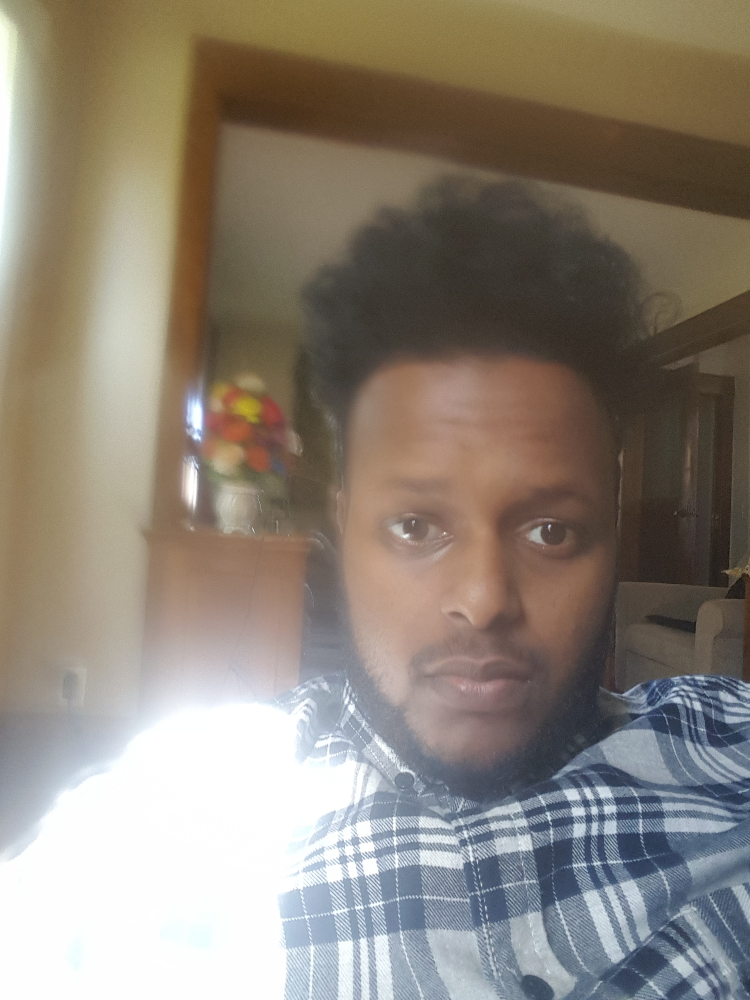

Amin Ali - Resume

About Me
My name is Amin Ali and I plan on getting my bachelors of computer science . I am interested in developing Apps and learning more about computers and the different jobs I can do after graduating. Although I have no experience in this field , but I have taken intro to computer science earlier this term at Concordia University. The course was very helpful and it helped me adapt to how the online courses work . Also I live in Saint Paul and for my occupation I do part time security at various locations around the twin cities.